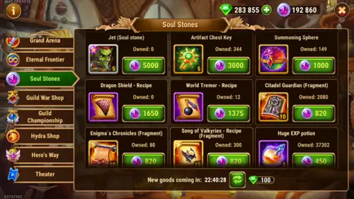
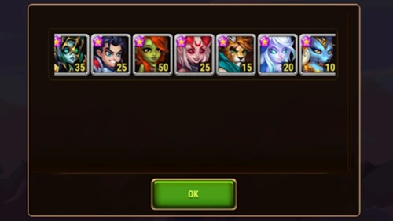

Beste Farmrouten für Anfänger in Hero Wars Alliance
- Von: Alexandre Domingos. .
Die besten Farmrouten für Anfänger in Hero Wars Alliance sind diejenigen, die dein Konto auch dann sinnvoll voranbringen, wenn kein Seelenstein fällt. Eine gute tägliche Route sollte dir Ausrüstung liefern, dein Hauptteam stärken und jeden Energiepunkt klug nutzen.
In diesem Guide zeige ich dir die Missionen, die sich meiner Meinung nach weiterhin zu farmen lohnen, warum ich Energie gegenüber zufälligen frühen Beschwörungen bevorzuge und wie jede Entscheidung mehr als einen Helden oder ein Team stärken kann. Mein Ziel ist es, dir dabei zu helfen, keine Energie mehr ohne Plan auszugeben. Die Belohnungen mögen heute klein wirken, doch wenn du die richtigen Farmrouten monatelang wiederholst, lässt sich dein Heldenaufgebot leichter ausrüsten, entwickeln und auf schwierigere Kämpfe vorbereiten.
Sieh dir unten meinen vollständigen Farmguide für Anfänger in Hero Wars Alliance an, um diese Routen direkt im Spiel zu sehen. Die schriftliche Strategie, die Missionsliste und meine Empfehlungen folgen direkt nach dem Video.

▶ Dieses Video auf YouTube ansehen
📋 Inhaltsverzeichnis der Besten Farmrouten für Anfänger
- Update: Ginger Ist Nicht Mehr Garantiert
- Prioritäten im Seelenstein-Shop
- Realm-Modus und Prioritäten für Seelenmünzen
- Die beste Energieinvestition für Anfänger
- Auroras Mission 9-1: Eine Starke Ausrüstungsroute
- Warum Heldenmissionen so effizient sind
- Meine liebsten täglichen Farmrouten für violette Gegenstände
- Fazit: Beständigkeit schlägt Glück
Update: Ginger Ist Nicht Mehr Garantiert
Wichtiges Update: Die Heldenmission 1-5, Händlerlager, gewährt nicht mehr bei jedem Durchlauf einen Ginger-Seelenstein. Die im ursprünglichen Video gezeigte und in früheren Versionen dieses Guides beschriebene garantierte Strategie entsprach dem damaligen Spielsystem, ist nach dem jüngsten Update jedoch keine zuverlässige tägliche Quelle für Seelenmünzen mehr.
Da Gingers Seelenstein jetzt vom Zufall abhängt, empfehle ich nicht mehr, diese Mission nur für sie zurückzusetzen. Spiele sie nur, wenn die verfügbaren Belohnungen zu deinem aktuellen Bedarf passen, und bevorzuge Missionen mit nützlicher Ausrüstung für die Helden, die du gerade aufbaust.
Prioritäten im Seelenstein-Shop
Sobald ein Held den Absoluten Stern erreicht hat, können seine zusätzlichen Seelensteine im Seelenstein-Shop gegen Seelenmünzen eingetauscht werden. Sobald dein erster Held sechs Sterne erreicht, wird dieser Shop freigeschaltet und überschüssige Steine jedes berechtigten Helden tragen zum Fortschritt deines Kontos bei.

Der Shop kann wertvolle Ressourcen bieten, darunter:
- Ausrüstung und Herstellungsmaterialien;
- Artefakttruhen-Schlüssel;
- Titanen-Beschwörungssphären; und
- Jet-Seelensteine.
Meine ehrliche Empfehlung für Anfänger ist, Jet nicht überstürzt aufzubauen. Er ist heute deutlich weiter vom aktuellen Meta entfernt als in früheren Jahren. Ich würde die meisten Seelenmünzen für Ausrüstung und Fortschrittsmaterialien ausgeben, die deine bereits eingesetzten Helden verbessern. Eine Ressource, die deinem Kernteam heute hilft, ist in der Regel besser als ein langes und kostspieliges Nebenprojekt.
Realm-Modus und Prioritäten für Seelenmünzen
Der Realm-Modus ist zu einer weiteren hervorragenden Wertquelle für neue Konten geworden. Dort kannst du jeden Tag Seelensteine starker Helden, Titanenressourcen und nützliche Fortschrittsmaterialien erhalten. Wähle Belohnungen, die den Helden und Teams helfen, die du gerade aufbaust.

Der Realm-Modus hilft beim Aufbau deines Heldenaufgebots, während überschüssige Seelensteine von Helden mit Absolutem Stern den Seelenstein-Shop versorgen. Mehr zusätzliche Seelensteine bedeuten mehr Seelenmünzen, und mehr Seelenmünzen bedeuten weniger Wartezeit auf die Ausrüstung, die deine Teams benötigen.
Die beste Energieinvestition für Anfänger
Einer der größten Fehler, den ich bei Anfängern beobachte, ist der Versuch, viele Heldenmissionen zu farmen, ohne genügend Energie zu kaufen. Meine Empfehlung sind die beiden täglichen Energiekäufe für jeweils 50 Smaragde. Jeder Kauf gewährt 120 Energie, sodass du für insgesamt 100 Smaragde 240 zusätzliche Energie zum Farmen erhältst.
Meiner Meinung nach ist das eine der besten regelmäßigen Smaragdinvestitionen für Anfänger und Free-to-Play-Spieler. Zusätzliche Energie bedeutet mehr Seelensteine, mehr Ausrüstungsteile, schnellere Heldenbeförderungen und mehr Kontoerfahrung. Zufällige Beschwörungen können am Anfang aufregend wirken, aber mit Energie kontrollierst du selbst, was du aufbaust. In Hero Wars Alliance ist Energie gleichbedeutend mit Fortschritt.

Auroras Mission 9-1: Eine Starke Ausrüstungsroute
Die Heldenmission 9-1, Shore (Küste) bleibt eine meiner liebsten Farmrouten. Diese Aurora-Mission bietet deinem Konto eine nützliche Fortschrittschance: Du kannst Aurora-Seelensteine oder wichtige violette Ausrüstungskomponenten erhalten.
Zu den wichtigsten möglichen Belohnungen gehören Minotaurenkopf, Hand des Ruhms und Wüstenklinge. Diese Komponenten werden immer wieder in Herstellungsrezepten benötigt. Dadurch bleibt die Mission selbst dann wertvoll, wenn kein Aurora-Seelenstein fällt. Mit derselben Energie arbeitest du sowohl an einer Heldin als auch an deinem allgemeinen Ausrüstungsvorrat.
Warum Heldenmissionen so effizient sind
Heldenmissionen bieten dir zwei mögliche Gewinne: Helden-Seelensteine und Ausrüstungsmaterialien. Ein ausgebliebener Seelenstein bedeutet nicht zwangsläufig verschwendete Energie, wenn die Mission zugleich eine Komponente liefert, die dein Team bald benötigt.
Deshalb bevorzuge ich Missionen, deren Ausrüstung in vielen Herstellungsrezepten nützlich bleibt. Anstatt nur den nächsten sichtbaren Gegenstand zu farmen, baue ich nach und nach einen Vorrat häufig benötigter Engpass-Komponenten auf. Dieser Vorrat erleichtert es später erheblich, neue Helden zu befördern oder ein zweites und drittes Team zu stärken.
Meine liebsten täglichen Farmrouten für violette Gegenstände
Diese Heldenmissionen wiederhole ich regelmäßig, um wichtige violette Herstellungskomponenten zu erhalten. Nutze diese Liste als Prioritätenplan und bevorzuge anschließend die Gegenstände, die deine aktuellen Kernhelden tatsächlich benötigen.
| Held oder Route | Heldenmission | Wichtigstes Farmziel | Warum ich es farme |
|---|---|---|---|
| Keira | 7-1 | Hand des Ruhms | Eine häufig benötigte violette Herstellungskomponente |
| Artemis | 8-10 | Siegel des Pastors | Nützlich für spätere Ausrüstungsrezepte |
| Artemis | 11-6 | Alucards Amulett | Ein wertvolles Herstellungsziel für das späte Spiel |
| Kampagnenroute | 7-6 | Wüstenklinge | Einer der violetten Gegenstände, die ich am häufigsten verwende |
| Fox | 6-2 | Riesentöter | Unterstützt die Herstellung von Ausrüstung für mehrere Helden |
| Daredevil | 6-10 | Minotaurenkopf | Kombiniert die Chance auf eine Heldin mit einer nützlichen Komponente |
| Daredevil | 8-1 | Flammendes Herz | Eine weitere starke langfristige Herstellungs-Farmroute |
| Heidi | 6-6 | Route für violette Ausrüstung | Ein effizienter zusätzlicher Stopp, wenn die Belohnungen zu deinem Bedarf passen |
Versuche nicht, jeden Tag alle Routen zurückzusetzen. Sichere dir zuerst die beiden Energiekäufe für jeweils 50 Smaragde und investiere deine Energie anschließend in die Ausrüstung, die den Fortschritt deiner fünf Haupthelden blockiert. Dein Farmplan sollte deinem Teamplan dienen.
Fazit: Beständigkeit schlägt Glück
Starke Hero Wars Alliance-Konten entstehen nicht an einem einzigen glücklichen Tag. Sie werden durch die Wiederholung kleiner, effizienter Entscheidungen aufgebaut. Deshalb farme ich viele dieser Missionen auch nach Jahren noch: Wertvolle Heldenmissionen schließen Ausrüstungslücken, überschüssige Seelensteine können Seelenmünzen erzeugen und tägliche Energiekäufe halten das gesamte System in Bewegung.
Beginne mit einer Routine, die du dir leisten und dauerhaft beibehalten kannst. Wenn dein Hauptteam einen bestimmten violetten Gegenstand benötigt, priorisiere diesen Engpass, anstatt jede Route blind zu kopieren. Die beste Farmroute ist diejenige, die deine tatsächlichen Helden und Teams näher an ihre nächste sinnvolle Verbesserung bringt.
Welche tägliche Farmroute ist nach den jüngsten Änderungen dein Favorit in Hero Wars Alliance? Teile deine Erfahrungen in den Kommentaren. Deine Route kann einem anderen Spieler dabei helfen, ein stärkeres Konto aufzubauen, ohne Energie zu verschwenden.
Entdecke neue Strategien mit unseren empfohlenen Guides!


Hinterlasse deine Meinung!
Haben diese Farmrouten für Anfänger deinen täglichen Plan verbessert? Gibt es eine Heldenmission, die deiner Meinung nach einen Platz auf Alexandres Liste verdient? Nutze den Kommentarbereich des Alexandre Games Blogs, um deine bevorzugte Farmroute zu teilen, Fragen zu stellen oder eine Aktualisierung vorzuschlagen.
Klicke auf die Schaltfläche unten, um zu beginnen: